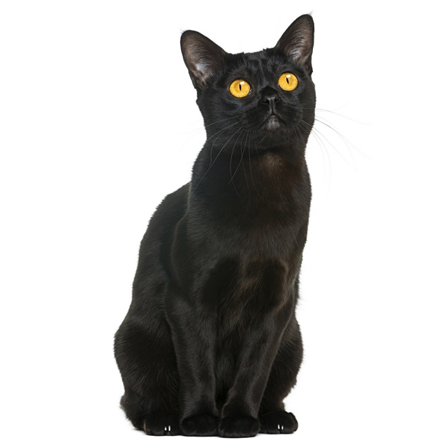

Bár eredete egészen a Nílus völgyéig vezethető vissza, a fajta valójában Nagy-Britanniában alakult ki. Az 1860-as években Lord Robert Napier egy macskával érkezett Britanniába egy abesszin katonai misszióról. A macska neve Zulu volt, és ő lett a ma ismert abesszin fajta megalapozója. A szőrzet különleges mintázata a vadnyulak színére emlékeztette a lordot. Ez a jellegzetesség annyira vonzó volt, hogy Zulut kifejezetten olyan macskákkal keresztezték, melyek kinézete hasonlatos volt az övéhez. Így alakult ki az abesszin fajta.



| Faj | Származás | Méret | Ár |
|---|---|---|---|
| Abesszin | Nagy-Brittania | 3,60-5,40 kg | 130000 felett |
| Bengáli | Amerikai Egyesült Államok | 3,60-5,40 kg | 200000 felett |
| Bombay | Amerikai Egyesült Államok | 3,00-3,30 kg | 70000 felett |
| Birman | Burma | 2,70-6,30 kg | 50000 felett |
| Egyiptomi mau | Egyiptom | 2,70-6,30 kg | 400000 felett |
| Karthausi | Franciaország | 3,10-7,60 kg | 200000 felett |
Macskafajták
A vadmacskák szépsége mindig is vonzó volt az emberek számára, így nem véletlen, hogy komoly erőfeszítéseket tettek, hogy egy vadmacskából háziasított macskát tenyésszenek ki, azaz egy vad megjelenésű, de kellemes természetű fajtát. E célból elsőként egy ázsiai leopárd macskát és egy cirmost kereszteztek az 1960-as években, az USA-ban. A bengáli nevét az ázsiai leopárd macska tudományos nevéről kapta, mely nem más, mint Felis bengalensis.
A fajta eredete valójában ismeretlen. Egyes vélekedések szerint sziámi macskák angórával vagy perzsával való keresztezéséből lettek, de hogy mikor, nem tudni. Feltehetőleg Ázsia déli vidékein kereszteződtek olyan macskák, melyek magukban hordozták a jellegzetes mintázat, a hosszú szőrzet és a kék szem génjeit. Tény, hogy a francia földre került egyedek segyítségével a birman fajta gyarapodása szépen alakult, ám a második világháború végére csak egyetlen pár maradt. Újabb nehéz munka kezdődött a fajta megmentése érdekében.
A macskatenyésztők mindig is szerettek kísérletezni, új fajtákat alkotni, akár genetikai mutációkra alapozva, akár fajták keresztezése által. Mindezt persze az eltérő küllem, szín vagy mintázat érdekében. A bombay, mely nevét az indiai kikötőváros után kapta, semmilyen kapcsolatban nem áll a szubkontinenssel, sokkal inkább a sabée burmai és a fekete amerikai rövidszőrű keresztezéséből jött létre, és ennek köszönheti nevét. Pont olyan, mint egy miniatűr fekete párduc.
Lehet rajta vitatkozni, hogy a mau valóban a több ezer éves egyiptomi kultúra terméke-e, avagy sem, ám
igaz,
hogy a feltűnően foltozott fajta rajongói határozottan állítják, sőt, tényként kezelik, miszerint ezek a
macskák már a fáraók mellett ücsörögtek a trónon. Ki tudja? Talán igaz is lehet az elgondolás.
Az egyiptomi mau (amúgy a mau szó egyiptomi eredetű, és mily meglepő, macskát jelent) az egyetlen
természetesen foltos háziasított macskafajta. Más szavakkal mintázatát nem a génekkel való emberi
manipuláció
alkotta.
A szerzetesek köpenyére hajazó szürkés bundájával a chartreux-t nem véletlenül kötik a karthauzi rendhez. Eredete összefügg a vallással. Feltehetőleg az 1500-as évek közepén került ez a szép kék fajta Franciaországba a Közel-Keletről. A Párizs mellett élő karthauzi szerzetesek tenyésztették, és feltehetőleg rágcsáló irtásra tartották. A csendes, egérvadász négylábúak tökéletes társak voltak csendes, magányos rend tagjai számára.
Forrás: PET4YOU
További macskafajták: Royal
Canin